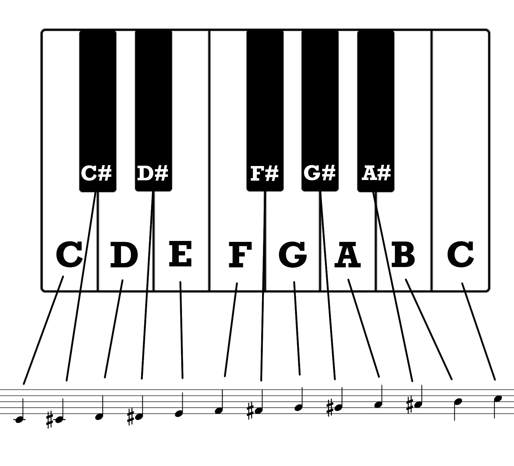

Deep Dive
The Theory
The explanation that Major chords = happy and Minor chords = sad is true but a simple one.
What is the real technical difference?
To understand this we must understand how to make a Major and Minor Scale.
A scale has 8 notes, with the step between each note being either a half step or a whole step. This is also sometimes called intervals, or the space between two notes.
On a piano, half a step is going from one key to the next immediate key, be it a white or black one. Going up a whole step would mean you skip the next immediate key and play the following one. Study the below diagram to observe each note and the spaces between them.
For example, the scale of C Major starts on a low C then makes it's way up to a middle C before making it's way back down as shown below in the C Major Scale.
'Steps' in a scale
The best way to see this is visually on a piano. Look at the diagram below.
Each blue note is a note in the C Major scale. A 'W' stands for 'whole' step and a 'h' stands for half. As you can see, there are no black keys used in this scale.
Starting from the root (first) note in the scale, this is formula:
MAJOR: Whole, whole, half, whole, whole, whole, half.
So how do we make it a minor scale?
Simple! You start with the same root note and change the steps! The 3rd, 6th and 7th notes are 'flattened' to give the music a minor feel.
Here is the formula for minor:
MINOR: Whole, half, whole, whole, half, whole, whole.
Here is what that looks like on a piano to help you visualise it. This is a Natural C Minor scale.
This all combines to give us 'major' and 'minor' music, and is the basis for scales, chords and ultimately dictates what a piece of music 'feels' like.